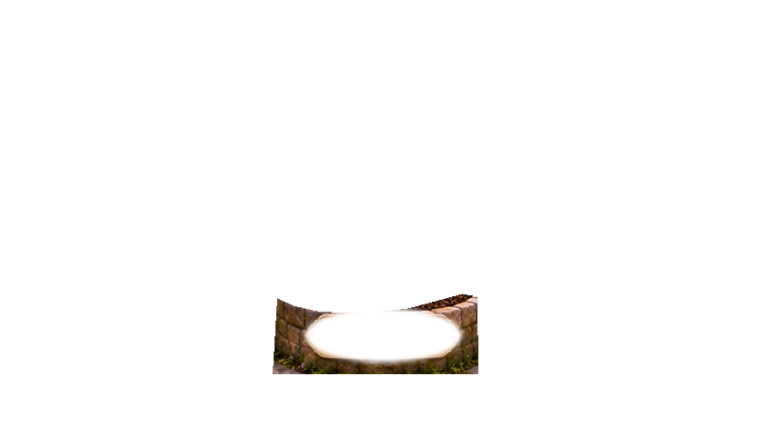
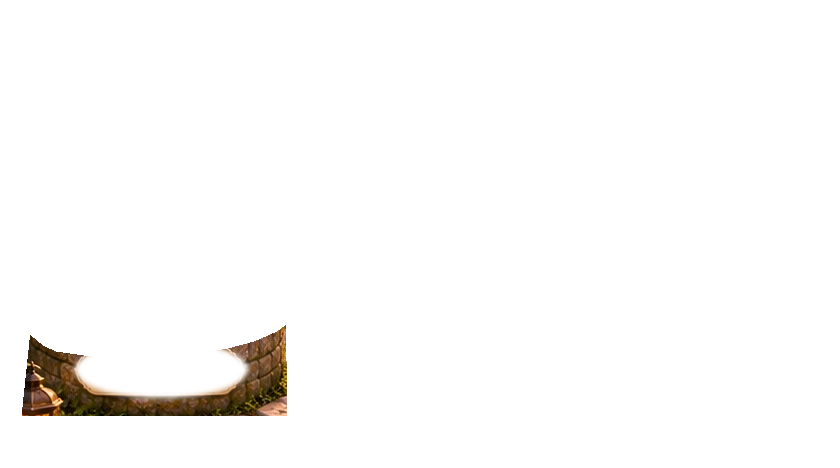
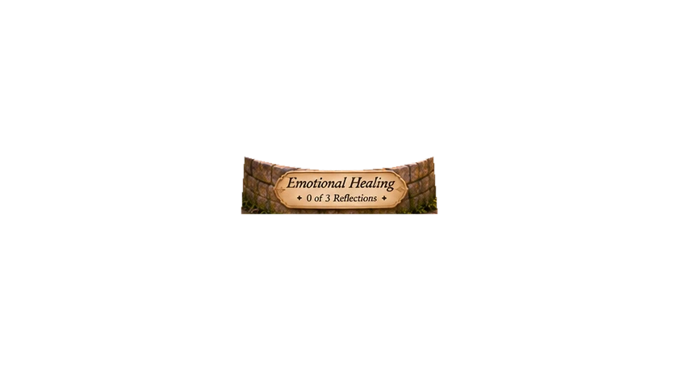

The Garden of Becoming
Garden Update · Version 3
Six pathways to growth. Choose a planter, nurture it with reflection, and watch your garden come alive.





“Growth happens one gentle moment at a time.”
Self-Worth · 0 of 3 reflections
Select the Self-Worth planter or Begin Your Journey. Each completed reflection changes the whole garden scene—no flower overlays.
Your reflections are saved only in this browser on this device, not in a clinical record. Export your journal to keep a copy. Avoid entering patient-identifying or confidential clinical information. If you share a device, others using this browser may be able to see saved reflections.